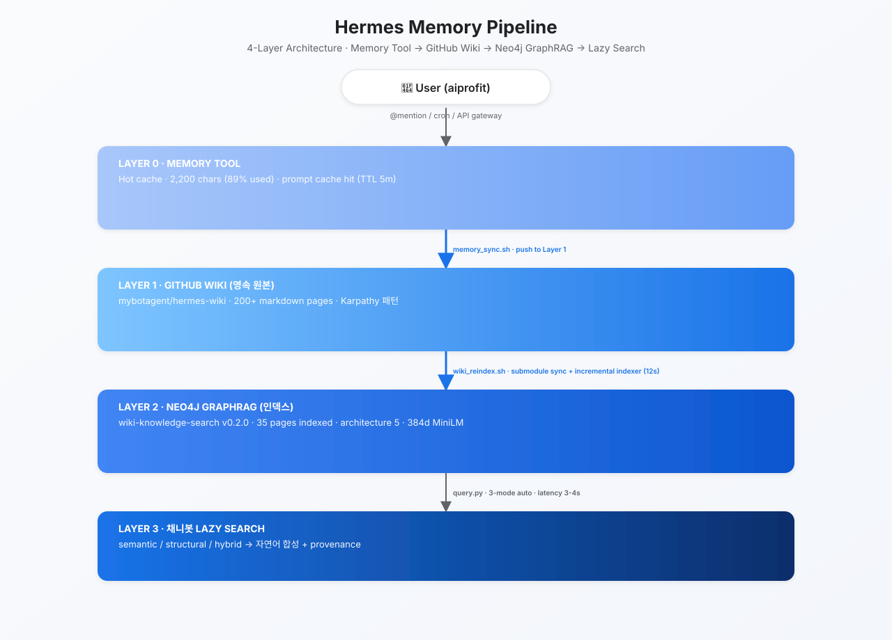

4-Layer Architecture · Memory Tool → GitHub Wiki → Neo4j GraphRAG → Lazy Search
Built 2026-07-02 · mybotagent/Hermes Memory Pipeline v1.0

SVG · 4-Layer pipeline · User → Memory → Wiki → Neo4j → Lazy Search
Each layer removes a specific limitation of the one below it.
| Limitation | Solution | Layer |
|---|---|---|
| Memory tool capped at 2,200 chars | GitHub wiki, unlimited persistence | Layer 0 → 1 |
| Keyword search only | Neo4j vector + graph retrieval | Layer 1 → 2 |
| Full wiki load is expensive | Lazy query, 3 modes (semantic/structural/hybrid) | Layer 2 → 3 |
| Repeated token cost | Prompt cache, 5-minute TTL | All layers |
Pushed, reindexed, queried — every step measured.
| Check | Result | Artifact |
|---|---|---|
query.py response time | ✅ 3–4 s | Wall-clock latency |
| Top-result relevance | ✅ 5 hits | "memory pipeline" ranked #1 (0.856) |
| Memory → wiki push | ✅ commit b785d5b | memory_sync.sh |
| Wiki → Neo4j auto-sync | ✅ Daily at 21:00 KST | wiki_reindex.sh + cron |
| Git push → search hit | ✅ End-to-end | architecture/hermes-memory-pipeline.md ranks #1 |
2026-07-02 · Design-execution gap < 20% · 5-stage verified
why → what → whether → what → how → validate
why — Is this worth doing? (value check) → what — What actually happened? (quantify) → whether — Is the metric itself sound? (measure-of-the-measure) → what — What should we really be measuring? (correct definition) → how — What change addresses it? (cron, config, soul diff) → validate — Confirm with a measurable signal.
Foundational loop for self-improvement, critical analysis, and meeting facilitation.
| Asset | Purpose | Location |
|---|---|---|
memory_sync.sh | Memory → wiki push + reindex | ~/.hermes/scripts/ |
wiki_reindex.sh | Submodule sync + Neo4j incremental reindex | ~/.hermes/scripts/ |
memory_alert.sh | 90% memory-cap alert (no auto-compression) | ~/.hermes/scripts/ |
| Cron registration | Daily at 21:00 KST | crontab -l |
| Wiki design page | Full 4-Layer architecture write-up | hermes-wiki/architecture |
| Meeting notes | Design decisions & rationale | meeting-notes/2026/07/02 |
wiki-knowledge-search incremental options.Design-execution gap ~ 20% · closing via the 5-stage loop.